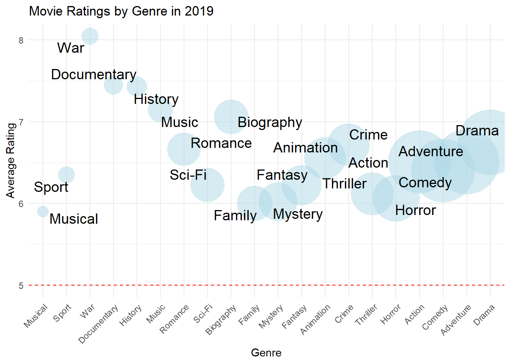
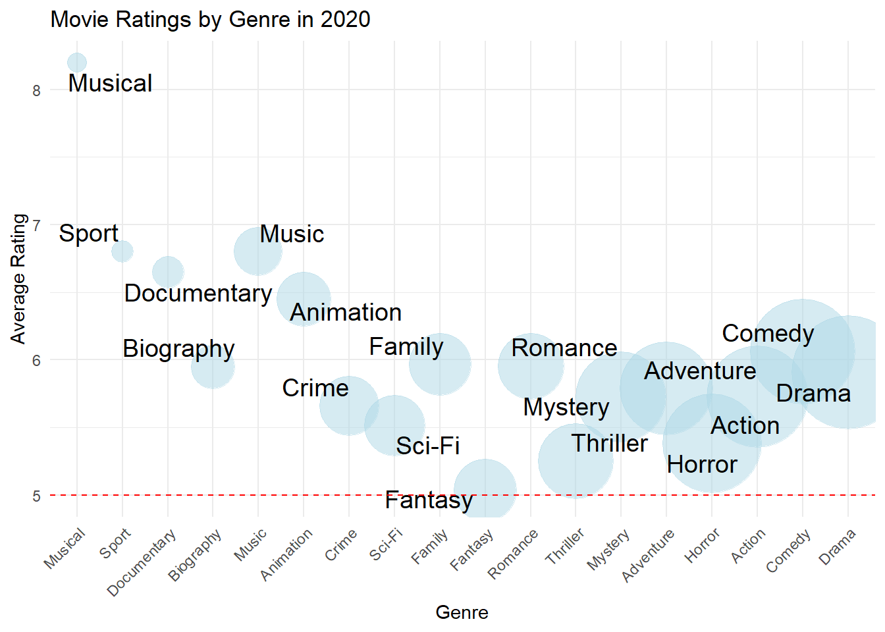

| Title | Release Year | Release Date | Released Theaters | Total Gross Value |
|---|---|---|---|---|
| Avengers: Endgame | 2019 | Apr 26 | 4,662 | $858,373,000 |
| The Lion King | 2019 | Jul 19 | 4,802 | $543,638,043 |
| Star Wars: Episode IX - The Rise of Skywalker | 2019 | Dec 20 | 4,406 | $515,202,542 |
| Frozen II | 2019 | Nov 22 | 4,440 | $477,373,578 |
| Toy Story 4 | 2019 | Jun 21 | 4,575 | $434,038,008 |
| Captain Marvel | 2019 | Mar 8 | 4,310 | $426,829,839 |
| Spider-Man: Far from Home | 2019 | Jul 2 | 4,634 | $390,532,085 |
| Aladdin | 2019 | May 24 | 4,476 | $355,559,216 |
| Joker | 2019 | Oct 4 | 4,374 | $335,451,311 |
| Aquaman | 2019 | Dec 21 | 4,184 | $335,061,807 |
Analysis on Movie Success Indicators
Abstract
In this study, we delve into the variables contributing to movie success, focusing on the interplay between a movies’ genre, number of theaters showing, the moth of release, and the year of premiere, particularly in the context of the pre and post-COVID-19 era, spanning from 2019 to 2022. This comprehensive analysis aims to shed light on the nuanced relationship between these variables and movie success, highlighting how the cinematic landscape has evolved in response to the COVID-19 pandemic. The findings of this study enrich our understanding of the determinants of cinematic success, providing valuable insights for filmmakers, distributors, and industry strategists in navigating the changing film industry.
1 Introduction
In the realm of global entertainment, movies hold a pivotal role, not only as a form of artistic expression but also as a significant driver of cultural and economic activity. The advent of COVID-19 has precipitated profound changes across the global media landscape, altering audience behaviors and consumption patterns. The surge in online media consumption during the pandemic has brought unprecedented challenges and transformations to the traditional movie industry. This shift has prompted a reevaluation of what factors contribute to a movie’s success in an era where digital platforms are increasingly dominating. Against this backdrop, this paper aims to analyze several indicators related to movie success, taking into account the impact of COVID-19 on both the production and consumption of films. By examining the interplay between various factors and movie ratings, this study seeks to uncover insights into the dynamics of movie success in a rapidly evolving media environment.
Employing a multifaceted analytical approach that combines genre classification, theaters metrics, seasonal release timing, and annual trends, we probed the determinants of cinematic success in the fluctuating entertainment landscape from 2019 to 2022. Our study meticulously compiled data from Box Office Mojo and IMDb, focusing on films that achieved a commendable rating of 7/10 or above, signifying both critical and popular acclaim. Through the application of advanced statistical techniques and web scraping tools, we dissected the top 200 grossing films to unravel the intricate relationship between these variables and their collective impact on a movie’s success. A higher performance in these metrics typically correlates with a movie’s ability to resonate with diverse audiences, navigate distribution challenges, and capitalize on favorable release windows. This analysis not only sheds light on the evolving criteria for what makes a movie successful in the digital age but also offers insights into the strategic considerations filmmakers and distributors must weigh in an increasingly competitive and segmented market.
The paper is structured to facilitate a comprehensive understanding of the study and its implications. Following Section 1, Section 2 presents the data, detailing the data sources, analytical techniques, and the rationale behind the chosen methods. Section 4 discusses the results. Section 5 provides an in-depth discussion of these findings.
2 Data
//TODO
2.1 Dataset Introduction
Talk more about it.
// TODO
| Title | Release Year | Genres | IMDb primary key |
|---|---|---|---|
| Carmencita | 1894 | Documentary,Short | tt0000001 |
| Le clown et ses chiens | 1892 | Animation,Short | tt0000002 |
| Pauvre Pierrot | 1892 | Animation,Comedy,Romance | tt0000003 |
| Un bon bock | 1892 | Animation,Short | tt0000004 |
| Blacksmith Scene | 1893 | Comedy,Short | tt0000005 |
| Chinese Opium Den | 1894 | Short | tt0000006 |
| Corbett and Courtney Before the Kinetograph | 1894 | Short,Sport | tt0000007 |
| Edison Kinetoscopic Record of a Sneeze | 1894 | Documentary,Short | tt0000008 |
| Miss Jerry | 1894 | Romance | tt0000009 |
| La sortie de l’usine Lumière à Lyon | 1895 | Documentary,Short | tt0000010 |
//TODO
| Rating | Number of Votes | IMDb primary key |
|---|---|---|
| 5.7 | 2037 | tt0000001 |
| 5.7 | 272 | tt0000002 |
| 6.5 | 1988 | tt0000003 |
| 5.4 | 178 | tt0000004 |
| 6.2 | 2746 | tt0000005 |
| 5.0 | 183 | tt0000006 |
| 5.4 | 853 | tt0000007 |
| 5.4 | 2183 | tt0000008 |
| 5.3 | 210 | tt0000009 |
| 6.8 | 7510 | tt0000010 |
//TODO
2.2 Variable
| Title | Release Year | Release Date | Genres | Rating | Released Theaters |
|---|---|---|---|---|---|
| Mortal Kombat | 2021 | Apr 23 | Action,Adventure,Fantasy | 6.0 | 3114 |
| Motherless Brooklyn | 2019 | Nov 1 | Crime,Drama,Mystery | 6.8 | 1342 |
| Alita: Battle Angel | 2019 | Feb 14 | Action,Adventure,Sci-Fi | 7.3 | 3802 |
| Shazam! | 2019 | Apr 5 | Action,Adventure,Comedy | 7.0 | 4306 |
| Pet Sematary | 2019 | Apr 5 | Horror,Mystery,Thriller | 5.7 | 3585 |
| Jungle Cruise | 2021 | Jul 30 | Action,Adventure,Comedy | 6.6 | 4310 |
| Fantasy Island | 2020 | Feb 14 | Fantasy,Horror,Mystery | 4.9 | 2784 |
| A Journal for Jordan | 2021 | Dec 25 | Drama,Romance,War | 6.0 | 2500 |
| The Rental | 2020 | Jul 24 | Drama,Horror,Mystery | 5.7 | 250 |
| The Little Things | 2021 | Jan 29 | Crime,Drama,Mystery | 6.3 | 2206 |
//TODO
2.2.1 Relationship between Movie Success from 2019 to 2022 by Release Theaters

//TODO

//TODO

//TODO

//TODO

//TODO

//TODO
//TODO

//TODO
3 Model
//TODO
3.1 Model set-up
//TODO
\[\begin{align} y_i|\mu_i &\sim \mbox{Bern}(\mu_i) \\ logit(\mu_i) &= \beta_0 + \beta_{y[i]}^{year} + \beta_2 \space \times \space theater_i \\ \beta_0 &\sim \mbox{Normal}(0, 2.5) \\ \beta_{y[i]}^{year} &\sim \mbox{Normal}(0, 2.5) for \space y = 2019, 2020, 2021, 2022 \\ \end{align}\]
We run the model in R (R Core Team 2023) using the rstanarm package of Goodrich et al. (2022). We use the default priors from rstanarm.
3.1.1 Model justification
//TODO
3.1.2 Model prediction
//TODO
4 Results
//TODO
| (1) | |
|---|---|
| (Intercept) | 1.692 |
| theaters | 0.000 |
| Sigma[release_year × (Intercept),(Intercept)] | 0.556 |
| Num.Obs. | 479 |
| R2 | 0.061 |
| R2 Marg. | 0.021 |
| Log.Lik. | −123.048 |
| ELPD | −127.9 |
| ELPD s.e. | 13.9 |
| LOOIC | 255.7 |
| LOOIC s.e. | 27.8 |
| WAIC | 255.7 |
| RMSE | 0.27 |
//TODO
?(caption)

5 Discussion
5.1 First discussion point
//TODO
5.2 Second discussion point
5.3 Third discussion point
5.4 Weaknesses and next steps
//TODO
Appendix
6 Additional data details
7 Model details
7.1 Posterior predictive check
//TODO

7.2 Diagnostics
//TODO


8 References
Goodrich, Ben, Jonah Gabry, Imad Ali, and Sam Brilleman. 2022. “Rstanarm: Bayesian Applied Regression Modeling via Stan.” https://mc-stan.org/rstanarm/.
R Core Team. 2023. R: A Language and Environment for Statistical Computing. Vienna, Austria: R Foundation for Statistical Computing. https://www.R-project.org/.